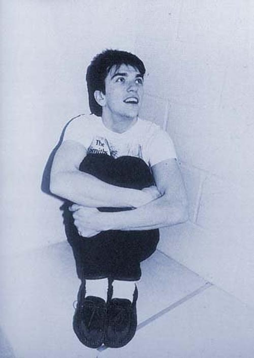

Mike Joyce

| Birth Name: |
Michael Adrian Paul Joyce |
| Born: |
1 June 1963 (age 58) |
| Origin: |
Fallowfield, Manchester, England |
| Occupation: |
Musician, DJ, broadcaster |
| Instruments: |
Drums |
| Years Active: |
1982–present |
| Labels: |
Rough Trade, Sire, Parlophone, RCA, Warner Bros., Polydor, Decca, Lost Highway, Harvest, Capitol, BMG |
| Associated Acts: |
The Smiths, Sinéad O'Connor, Morrissey, Buzzcocks, Public Image Limited, Julian Cope, P. P. Arnold, Pete Wylie, Moondog One, Aziz Ibrahim, Bonehead, Vinny Peculiar |
While the Smiths provided Joyce with his first taste of success, he had previously drummed for Manchester band The Hoax and Northern Irish punk rock group
Victim. Immediately after the break-up of the band in 1987, Joyce and Smiths bassist Andy Rourke played with Sinéad O'Connor. They, along with Craig Gannon,
also provided the rhythm section for two singles by Smiths' singer Morrissey – "Interesting Drug" and "The Last of the Famous International Playboys" and their
B-sides. Work with Suede, Buzzcocks, Public Image Limited, Julian Cope, P. P. Arnol and Pete Wylie followed throughout the 1990s. Joyce, Rourke, and Gannon
reunited to work on a project with fellow Manchester musician Aziz Ibrahim (formerly of the Stone Roses and Simply Red), ex-Oasis guitarist Bonehead
(as Moondog One), and Vinny Peculiar.
In July 2007, Joyce, along with Rourke released Inside The Smiths, a DVD which chronicled their experiences of being in the band. In October 2007, Joyce toured the UK
playing drums for Vinny Peculiar with Bonehead (Oasis) on bass guitar, and in 2008 he presented the Alternative Therapy radio show on Revolution 96.2 FM at The
Brickhouse until the station changed format, later reviving it on Manchester Radio Online and Tin Can Media. He hosts The Coalition Chart Show on East Village Radio,
which streams from New York. In parallel to his music career, Joyce works as a DJ and broadcaster, including occasional appearances on BBC 6 Music. Joyce has hosted
shows on East Village Radio, an internet station.
Since October 2017, Joyce has hosted a weekly radio show on Manchester radio station XS Manchester. In October 2018, the show was nominated in the 'Best Specialist
Music Show' category at the ARIAS 2018 radio awards. Joyce is a patron of the Manchester-based charity Back on Track; as part of this role, Joyce ran a special cooking
session with some of the charity's clients, during which they cooked vegetables from his allotment, and featured as a story on ITV Granada.